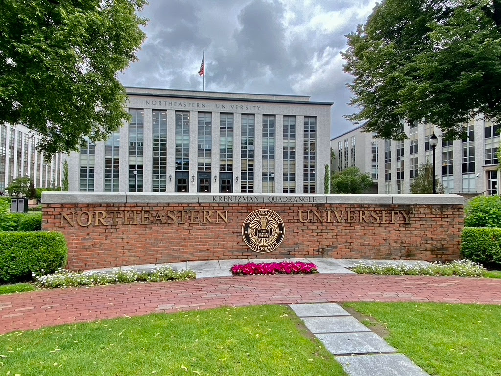

Hello World!
Hello! My name is Ella Taira. I am a fourth-year student at Northeastern University in Boston, and I will be graduating in the spring of 2025. Originally from Chicago, IL, I am 22 years old and currently pursuing a degree in Computer Science. My journey in tech began with a passion for problem-solving and a curiosity about how technology shapes the world around us. Over the years, I have developed a strong interest in software development and cybersecurity, which has guided my academic and professional path.
During my time at Northeastern, I have completed two co-op experiences, both of which have been instrumental in shaping my career goals. My first co-op was as a Security Engineer at a cybersecurity company, where I gained hands-on experience in identifying vulnerabilities, implementing security measures, and protecting sensitive data. This role taught me the importance of proactive security practices and how to think like both a developer and an attacker. My second co-op was as a Software Engineer at a cybersecurity startup in Boston. In this role, I focused on backend development, building scalable systems, and collaborating with cross-functional teams to deliver high-quality software solutions. I enjoyed this experience so much that I continued working part-time in this role while balancing my studies.
Outside of academics and work, I enjoy exploring new technologies, contributing to open-source projects, and staying active in the tech community. I am also passionate about mentoring aspiring developers and helping them navigate their own career paths. I am excited to see where my journey in computer science takes me next!